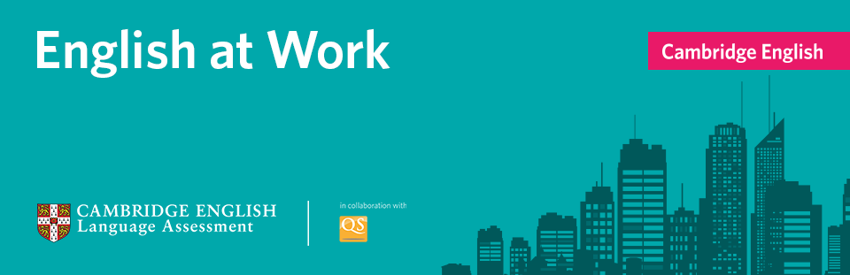

<section id="eng-skills" class="why-we-section">
  <div class="container mt-5">
    <h2 class="drop-content-item">English language skills in the workplace</h2>
    <div class="line"></div>
    <div class="row mx-auto">
      <div class="col-lg-3 col-cd-5 mx-auto sidebar-menu">
        <h5 data-toggle="collapse" href="#sidebar" role="button" aria-expanded="false" aria-controls="sidebar">Why
          Choose Us?<i class="fa fa-list pt-2 ml-1"></i></h5>
        <div class="sidebar collapse" id="sidebar">
          <ul class="list-unstyled">
            <li *ngFor="let sidebarItem of sidebarItems" routerLinkActive="active">
              <a routerLink="/{{sidebarItem.link}}">{{sidebarItem.name}}</a>
            </li>
          </ul>
        </div>
      </div>
      <div class="col-lg-9 col-md-12 subItem mt-4">

        <div class="card mb-3">
          <div class="card-img-top">
            <div class="banner">
              <a target="_blank" class="banner-link" href="http://englishatwork.cambridgeenglish.org/"></a>
            </div>
          </div>
          <div class="card-body" style="border-left: 10px solid #00A8AB">
            <div class="row m-0">
              <div class="col-lg-9 col-md-9 col-12">
                <h4>English at Work: global analysis of language skills in the workplace</h4>
              </div>
              <div class="col-lg-3 col-md-3 col-12 p-0 text-center">
                <a target="_blank" class="banner-link" href="http://englishatwork.cambridgeenglish.org/"><button class="btn mt-3"
                    style="background: #00A8AB; color: #fff;">Discover More</button></a>
              </div>
            </div>
          </div>
        </div>

        <hr>

        <p>In collaboration with QS, we present the first global overview of English language skills at work. Our
          findings are based on data from over <span class="text-n1">5,300 employers in 38 countries/territories</span>,
          along with insights from
          Cambridge English experts.</p>

        <p>Our <a target="_blank" href="http://englishatwork.cambridgeenglish.org/">English at Work survey</a> shows
          the global importance of English, with over two thirds of employers saying
          that English is important for their business. Analysis of responses from these employers showed:</p>

        <div class="row eng-skills-differences">
          <div class="col-lg-6 col-md-6">
            <i class="fa fa-comments-o text-m2" aria-hidden="true"></i>
            <p>in every industry, there is a gap between the English language skills required at work and the English
              skills that employees have</p>
          </div>
          <div class="col-lg-6 col-md-6">
            <i class="fa fa-handshake-o text-n2" aria-hidden="true"></i>
            <p>around half of all employers offer a better starting package to applicants with good English language
              skills, which can also lead to faster progression through job grades and higher salary increases (in
              countries and territories where English is not an official language).</p>
          </div>
        </div>

        <div class="quote-block mt-5">
          <p class="quote">As a multinational company we have businesses around the world. Employees with a good
            standard of English
            can connect and communicate with each other effectively, since everyone speaks the same common language.</p>
          <p class="text-right"><strong>Chloe Gan</strong></p>
          <p class="text-right">HR Director <br>Arvato Systems, Malaysia</p>
        </div>

        <hr>

        <div class="explore">
          <h4>Explore English at Work</h4>
          <p>Discover what this survey means for your country, company size and sector with our interactive website.
            Explore key topics, compare countries that took part in the survey, and register to download our free
            report, which looks at our findings for English language skills at work.</p>
            <a target="_blank" class="banner-link" href="http://englishatwork.cambridgeenglish.org/"><button class="btn mt-3"
              style="background: #00A8AB; color: #fff;">English at Work: explore our survey</button></a>
        </div>

      </div>
    </div>
  </div>
</section>
